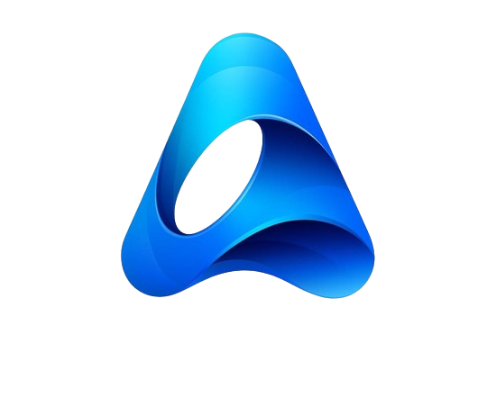

Karman Singh Bains
Projects
ML/DL Projects

Credit Analysis
A Streamlit app to predict credit scores using user information. Available profiles: Poor, Standard, Good.
Learn More
Loan Default Analysis
Predicts loan default probabilities based on user inputs using ML models.
Learn MoreData Visualization Projects

TTC Delay Analysis
Analysis and prediction of TTC bus delays. Streamlit app with visual insights.
Learn More
Survey Analysis and Sales Report
Analyzing survey data using Power BI to extract insights and visualize sales performance.
Learn MoreNLP Projects
Wikipedia Articles Classification
Classifies Wikipedia articles into three levels using LSTM with over 200+ unique classes. 88% accuracy.
Learn MoreYouTube Sentiment Analysis
A comprehensive sentiment analysis tool for YouTube video comments using NLP models.
Learn MoreGenerative AI Projects
ATS Resume Screening with AI
Automates ATS score evaluation using BERT and provides a detailed review with NVIDIA Llama 3.1.
Learn MoreExperience

Data Analyst at AENIX (2021-2022)
Data Scientist at IATA (2024-Present)
Publication

Alzheimer Diagnosis from MRI
Using deep learning on OASIS data with 92% accuracy. Published in STEM Fellowship.
Read Publication View Code